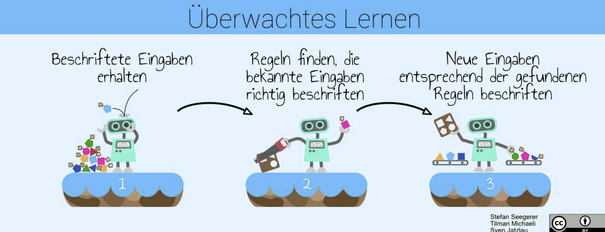
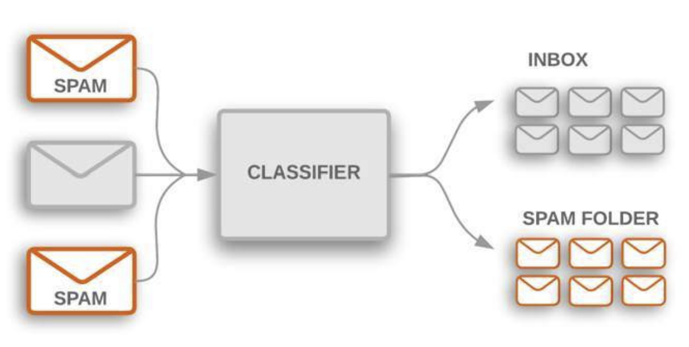
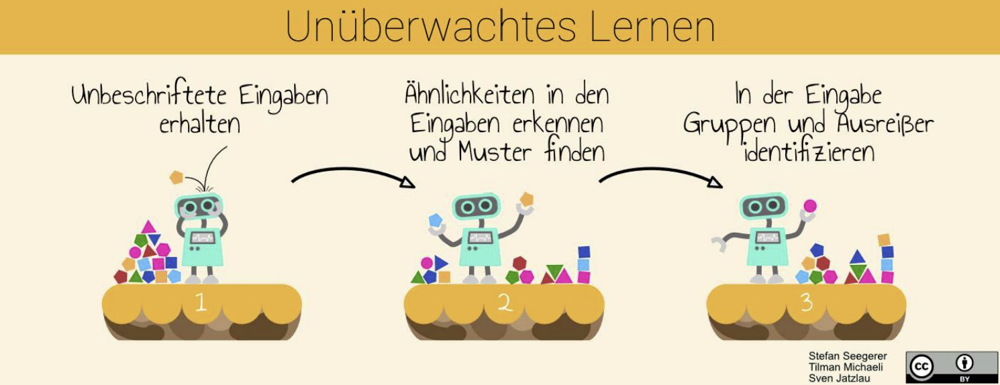
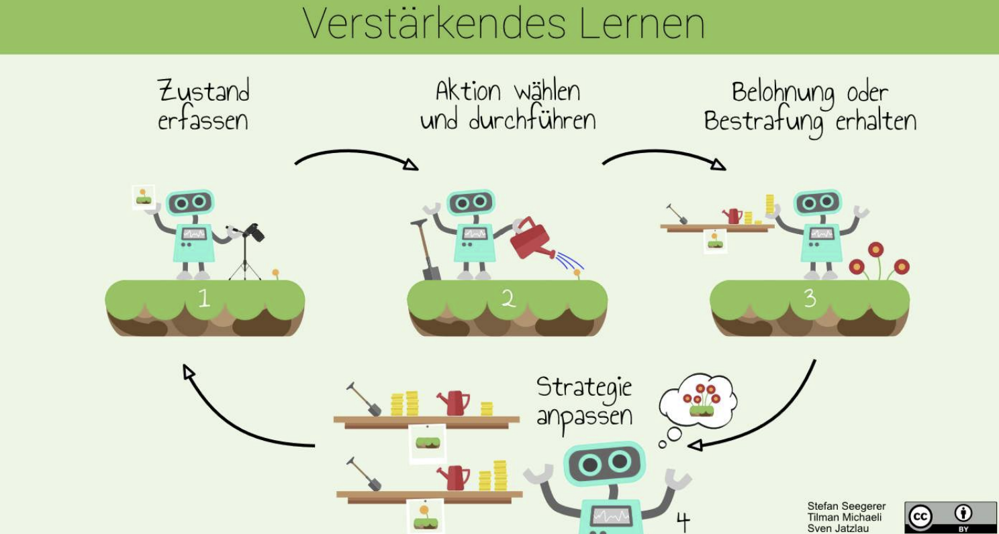
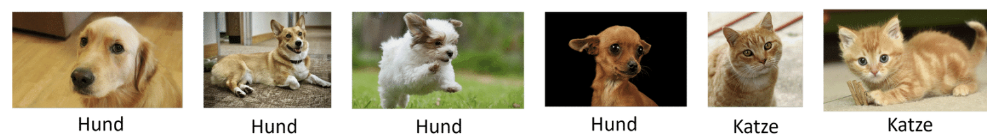
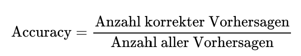
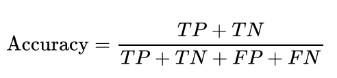
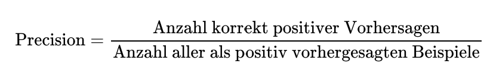
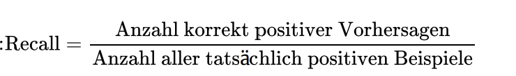
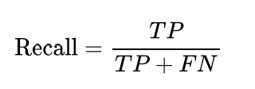

Ein Modell erkennt Pflanzen, sortiert E-Mails oder wählt einen Spielzug. Aber was bekommt es beim Lernen zurückgemeldet? Und woran erkennst du, ob es auf neuen Daten wirklich gut arbeitet?
Es bildet eine Eingabe auf eine Ausgabe ab, etwa ein Foto auf die Klasse „Hund“. Das Modell enthält gelernte Parameter und Verknüpfungen.
Er baut das Modell auf oder verändert es anhand von Daten und einem Lernziel. Er ist das Verfahren, mit dem das Modell entsteht.
Die Lernvarianten unterscheiden sich vor allem darin, welche Rückmeldung zum Aufbau des Modells verfügbar ist. Beginnen wir mit zwei Varianten, die auf vorhandenen Daten arbeiten.
Jedes Trainingsbeispiel enthält eine Eingabe und eine gewünschte Zielausgabe, das Label. Der Lernalgorithmus vergleicht die Modellvorhersage mit dem Label und verändert das Modell, um den Fehler zu verringern. Eine Person muss dabei nicht jeden einzelnen Trainingsschritt beobachten.

Die Ausgabe ist eine Kategorie: Spam oder normale E-Mail, Hund oder Katze, ein Verkehrszeichen oder eine handgeschriebene Ziffer.
Die Ausgabe ist ein Zahlenwert: etwa ein Hauspreis aus Fläche, Baujahr und Lage. Das Label ist hier der bekannte Verkaufspreis.

Die Eingabedaten besitzen keine vorgegebenen Zielausgaben. Der Algorithmus sucht Strukturen, beispielsweise Cluster ähnlicher Datenpunkte oder Ausreißer. Entwicklerinnen und Entwickler legen trotzdem Merkmale, Ähnlichkeitsmaß und Lernziel fest. „Unüberwacht“ bedeutet deshalb nicht „ohne menschliche Entscheidungen“.

Du könntest Songs nach Tempo und Klangstruktur gruppieren oder typische Einkaufsmuster in Warenkörben suchen. Ein ungewöhnlicher Kreditkartenumsatz kann als Ausreißer auffallen. Daraus folgt noch nicht, dass tatsächlich Betrug vorliegt. Reale Empfehlungssysteme und Betrugserkennung können mehrere Lernvarianten kombinieren.
Überwacht bedeutet: Zielausgaben sind im Training bekannt. Unüberwacht bedeutet: Strukturen werden ohne solche Ziel-Labels gesucht.
In einem Videospiel probierst du Aktionen aus. Manche bringen Punkte, andere führen zum Neustart. Du lernst nicht nur eine einzelne richtige Antwort, sondern ein Verhalten, das sich über längere Zeit lohnt.
Ein Agent nimmt den Zustand seiner Umgebung wahr, wählt eine Aktion und erhält eine zahlenmäßige Belohnung. Diese kann positiv, null oder negativ sein. Der Lernalgorithmus verbessert die Strategie des Agenten so, dass die erwartete Summe künftiger Belohnungen möglichst groß wird.

Ein Roboter kann in einer Simulation Würfe ausprobieren und Punkte für einen Korb erhalten. Ein Spielagent bekommt eine Rückmeldung bei Sieg oder Niederlage. Auch Werbung lässt sich auf Klicks als Belohnung optimieren; ob dieses Ziel sinnvoll ist, muss jedoch separat beurteilt werden.
Ein Agent optimiert die festgelegte Rückmeldung. „Viele Klicks“ ist nicht automatisch „gute Information“. Ein schlecht gewähltes Ziel kann erfolgreiches, aber unerwünschtes Verhalten fördern.
Labels, Strukturziele und Belohnungen liefern drei unterschiedliche Lernsignale. Derselbe Anwendungsbereich kann je nach Trainingsverfahren zu verschiedenen Varianten gehören.
„Die KI soll besser werden“ reicht als Auftrag nicht aus. Tom Mitchell beschreibt Lernen 1997 über drei Elemente: Task T, Performance P und Experience E. Sinngemäß lernt ein Programm, wenn sich seine Leistung P bei Aufgaben T durch Erfahrung E verbessert.
T: Eine eingehende Nachricht als Spam oder normale E-Mail klassifizieren. P: Möglichst viel Spam erkennen und möglichst wenige normale Nachrichten aussortieren. E: E-Mails, die von Nutzerinnen und Nutzern entsprechend markiert wurden. Die Variante ist überwacht.
T–P–E macht aus einer Idee einen überprüfbaren Lernauftrag. Ohne passende Erfahrungsquelle und messbare Leistung lässt sich „Lernen“ nicht sinnvoll belegen.
Ein Modell soll auf neuen Eingaben funktionieren. Wenn du nur die Daten prüfst, mit denen es gelernt hat, kannst du Auswendiglernen mit guter Generalisierung verwechseln.
Der Ablauf ist ein Kreislauf: Ein schlechter Validierungswert kann dich zu einem anderen Modell führen, ein systematischer Fehler zu neuen Daten oder sogar zu einem veränderten Lernauftrag.
Ein möglicher Ausgangspunkt ist, 20 % als Testmenge zurückzuhalten. Das ist eine Faustregel, keine feste Vorgabe. Die übrigen Daten werden für Training und Validierung genutzt. Jede Klasse sollte in allen Teilmengen vertreten sein. Fast identische Bilder, dieselben Tiere oder Aufnahmen derselben Serie können einen Test zu leicht machen und gehören je nach Lernauftrag gemeinsam in eine Teilmenge.
Training, Validierung und Test haben verschiedene Aufgaben. Ein fairer Test bewertet das fertige Modell auf Daten, die seine Entwicklung nicht beeinflusst haben.
Mit Teachable Machine: Bildprojekt kannst du ohne Programmcode ein Bildmodell trainieren. Dabei wird ein bereits vortrainiertes Bildmodell als Grundlage verwendet und für deine Klassen angepasst. Du trainierst also nicht die gesamte Bilderkennung von Grund auf.

T: Ein Foto mit genau einem Hund oder einer Katze der passenden Klasse zuordnen. P: Anteil richtiger Vorhersagen auf zurückgehaltenen Fotos, zusätzlich Fehler je Klasse. E: Korrekt beschriftete und vielfältige Hunde- und Katzenbilder. Es handelt sich um überwachtes Lernen.
Nutze eigene Tierfotos, bereitgestellte Unterrichtsdateien oder den Katzen-und-Hunde-Datensatz im Microsoft Download Center. Die zugehörige Kaggle-Datenseite beschreibt die Herkunft; für deren Download kann ein Konto nötig sein. Wähle für den Schulversuch eine überschaubare Teilmenge, beispielsweise 50 Bilder je Klasse.
Prüfe falsche Labels, beschädigte Bilder und Duplikate. Lege vier getrennte Ordner an: train-cats, train-dogs, test-cats, test-dogs. Reserviere beispielsweise je 10 der 50 Bilder als unabhängigen Test. Testbilder dürfen nicht in die Trainingsklassen hochgeladen werden.
Epoche: Ein Durchlauf über die Trainingsbeispiele. Batch-Größe: Anzahl von Beispielen, die gemeinsam für einen Anpassungsschritt genutzt werden. Lernrate: Größe der Parameteränderungen. Mehr Epochen führen nicht automatisch zu besserer Leistung auf neuen Bildern.
Teachable Machine hält intern einen Teil der hochgeladenen Daten zur Bewertung zurück. Dieser interne Vergleich ersetzt deinen unabhängigen Test nicht. Lege dein endgültiges Modell und die Entscheidungsregel fest, etwa „die Klasse mit dem höheren Wert“. Prüfe erst dann jedes zurückgehaltene Testbild und zähle richtige und falsche Vorhersagen je Klasse.
Prüfe zusätzlich ein Auto oder einen Elefanten als Grenzfall. Ein Zwei-Klassen-Modell kann dabei weiterhin „Hund“ oder „Katze“ ausgeben. Die angezeigten Prozentwerte sind Modellwerte; selbst ein hoher Wert garantiert keine korrekte oder zuverlässig kalibrierte Wahrscheinlichkeit.
Du kannst ein Modell trainieren, ohne seine komplette Verarbeitung selbst zu programmieren. Seine Qualität musst du trotzdem mit passenden Daten und nachvollziehbaren Tests belegen.
Eine Gesamtgenauigkeit beantwortet nur eine von mehreren Fragen. Für ein binäres Modell legst du zuerst fest, welche Klasse als positiv zählt. Im folgenden Rechenbeispiel ist das „krank“. Positiv bedeutet hier das Vorliegen der gesuchten Eigenschaft, nicht „gut“.
| Wirklichkeit / Vorhersage | Positiv (krank) | Negativ (gesund) |
|---|---|---|
| Tatsächlich positiv | 4 · TP: richtig positiv | 2 · FN: übersehener positiver Fall |
| Tatsächlich negativ | 2 · FP: Fehlalarm | 12 · TN: richtig negativ |
True / False beschreibt, ob die Entscheidung stimmt. Positive / Negative beschreibt die Vorhersage des Modells. Die Diagonale enthält die richtigen Entscheidungen: TP und TN.


Hier: (4 + 12) / 20 = 0,8 = 80 %. Accuracy berücksichtigt alle vier Felder. Bei ungleichen Klassengrößen kann sie eine wichtige Schwäche verdecken.

Precision = TP / (TP + FP). Hier: 4 / 6 ≈ 66,7 %. Zwei von sechs positiven Vorhersagen sind Fehlalarme. Hohe Precision ist beim Spamfilter nützlich, wenn normale E-Mails möglichst nicht fälschlich aussortiert werden sollen.


Hier: 4 / 6 ≈ 66,7 %. Das Modell übersieht zwei der sechs positiven Fälle. Ein hoher Recall, auch Sensitivität, ist wichtig, wenn übersehene Fälle besonders schwer wiegen.
Das Modell übersieht ein Drittel der positiven Fälle. Ob es für eine konkrete medizinische Aufgabe geeignet wäre, lässt sich aus 20 fiktiven Fällen nicht entscheiden. Dafür wären unter anderem eine größere repräsentative Studie, passende Grenzwerte und eine Bewertung der Fehlerfolgen nötig.
Accuracy bewertet alle Entscheidungen, Precision die positiven Vorhersagen und Recall die tatsächlich positiven Fälle. Die Fehlerfolgen bestimmen, welches Maß besonders wichtig ist.
Ein binäres Modell liefert oft einen Wert zwischen 0 und 1 für die positive Klasse. Ein Schwellenwert macht daraus eine Entscheidung: Ab der Schwelle wird „positiv“ vorhergesagt. Eine niedrigere Schwelle erkennt häufig mehr positive Fälle, erzeugt aber auch mehr Fehlalarme.
Die folgenden 20 fiktiven Fälle besitzen feste Modellwerte und feste tatsächliche Klassen. Bei der Schwelle 0,50 erhältst du genau die Matrix der vorherigen Seite. Du veränderst nur die Entscheidungsregel, nicht das trainierte Modell.
| Wirklichkeit / Vorhersage | Positiv | Negativ |
|---|---|---|
| Tatsächlich positiv | TP: 4 | FN: 2 |
| Tatsächlich negativ | FP: 2 | TN: 12 |
Die Fälle sind Übungsdaten, keine medizinische Leistungsstudie.
Ein Modell findet Zusammenhänge, die bei den Trainingsdaten nützlich sind. Diese müssen nicht die Merkmale sein, die du beabsichtigst. Wenn Hunde fast immer auf einer Wiese und Katzen fast immer auf einem Sofa fotografiert wurden, kann der Hintergrund zum entscheidenden Signal werden. Das nennt man Shortcut Learning.
Das Magazin fluter berichtet in „Wie dumm ist das denn?“ über ein Hautbildmodell, bei dem mitfotografierte Lineale zum Hinweis auf einen problematischen Befund wurden. Die Anekdote verdeutlicht eine gelernte Korrelation; sie ist kein Beweis, dass solche Modelle generell nur Lineale erkennen. Forschung zu Shortcut Learning untersucht solche unerwünschten Zusammenhänge systematisch.
Eine Schwelle verändert die Fehlerverteilung. Gute Metriken reichen trotzdem nicht aus, wenn Testdaten unpassend sind, Abkürzungen gelernt wurden oder Eingaben außerhalb des vorgesehenen Bereichs liegen.
Für den nächsten Blick hinter die Kulissen verwenden wir den Iris-Datensatz: 150 Messbeispiele mit vier Merkmalen und je 50 Beispielen der Arten Setosa, Versicolor und Virginica. Anders als beim Foto liegen die Eingaben bereits als überschaubare Zahlen vor.
Die vier Merkmale sind Länge und Breite von Kelchblatt (Sepal) und Kronblatt (Petal), jeweils in Zentimetern. Das Label ist der Artname. Die zu lösende Aufgabe ist eine überwachte Klassifikation.
| Kelchblattlänge | Kelchblattbreite | Kronblattlänge | Kronblattbreite | Label |
|---|---|---|---|---|
| 5,1 | 3,5 | 1,4 | 0,2 | Setosa |
| 7,0 | 3,2 | 4,7 | 1,4 | Versicolor |
| 6,3 | 3,3 | 6,0 | 2,5 | Virginica |
Im Streudiagramm steht jeder Punkt für eine Blüte. Der Ausschnitt enthält je sechs echte Messbeispiele pro Art, nicht alle 150. Vergleiche die beiden Merkmalskombinationen. Farben und Punktformen kennzeichnen die bekannten Labels.
| Art | Kelchlänge (cm) | Kelchbreite (cm) | Kronlänge (cm) | Kronbreite (cm) |
|---|
Vergleiche eine neue Blüte mit nahegelegenen Trainingsbeispielen. Skalierung, Distanz und die Zahl k beeinflussen das Ergebnis.
Lerne Fragen wie „Kronblattlänge kleiner als ein Grenzwert?“. Eine Folge solcher Fragen führt zur vorhergesagten Klasse.
Für Zahlenvorhersagen lernst du eine Funktion, etwa für Preise. Logistische Regression kann trotz ihres Namens für Klassifikation eingesetzt werden.
Vor dem Lernalgorithmus stehen ein klarer Auftrag, geeignete Merkmale, verlässliche Labels und eine faire Datenaufteilung. Streudiagramme helfen beim Erkunden, beweisen aber keine Vorhersageleistung.
Die Erklärungen beruhen auf dem bereitgestellten Unterrichtsmaterial und den folgenden Quellen. Die Diagnosematrix und die Modellwerte im Metrik-Labor sind fiktive Rechen- und Vergleichsaufgaben.
Bildmaterial: bereitgestelltes Unterrichtsmaterial. Die drei Lernvarianten-Grafiken nennen Stefan Seegerer, Tilman Michaeli und Sven Jatzlau und tragen eine CC-BY-Kennzeichnung; sie sind unverändert eingebunden. Die übrigen Bilder und Formeln stammen aus dem bereitgestellten Material.